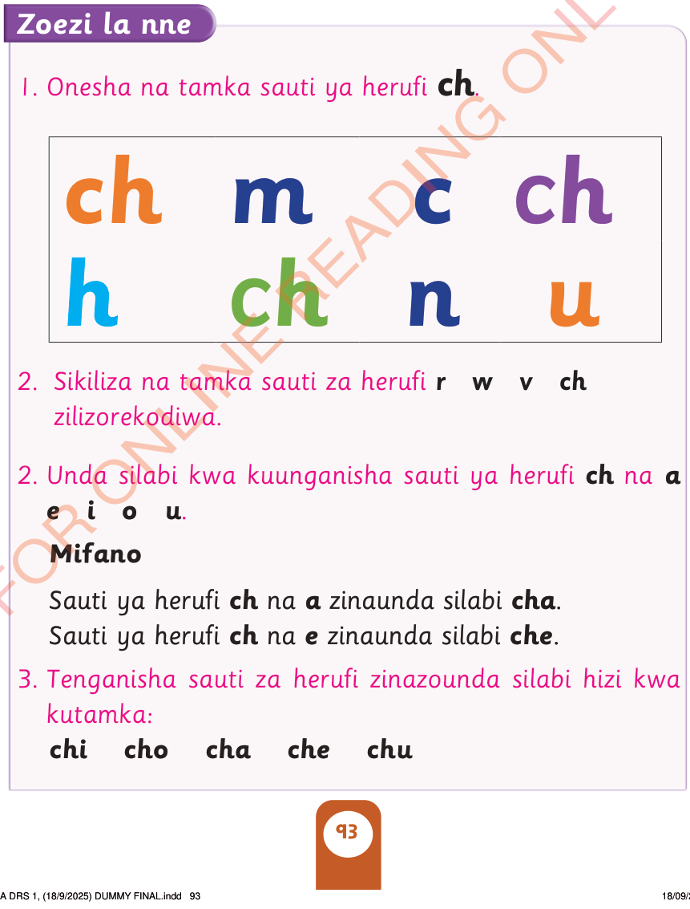

Tazama herufi hii:
Tamka sauti ya herufi hii:

Zoezi la nne
1. Onesha na tamka sauti ya herufi ch.
2. Sikiliza na tamka sauti za herufi r w v ch zilizorekodiwa.
2. Unda silabi kwa kuunganisha sauti ya herufi ch na a e i o u.
Mifano
Sauti ya herufi ch na a zinaunda silabi cha.
Sauti ya herufi ch na e zinaunda silabi che.
3. Tenganisha sauti za herufi zinazounda silabi hizi kwa kutamka:
chi cho cha che chu